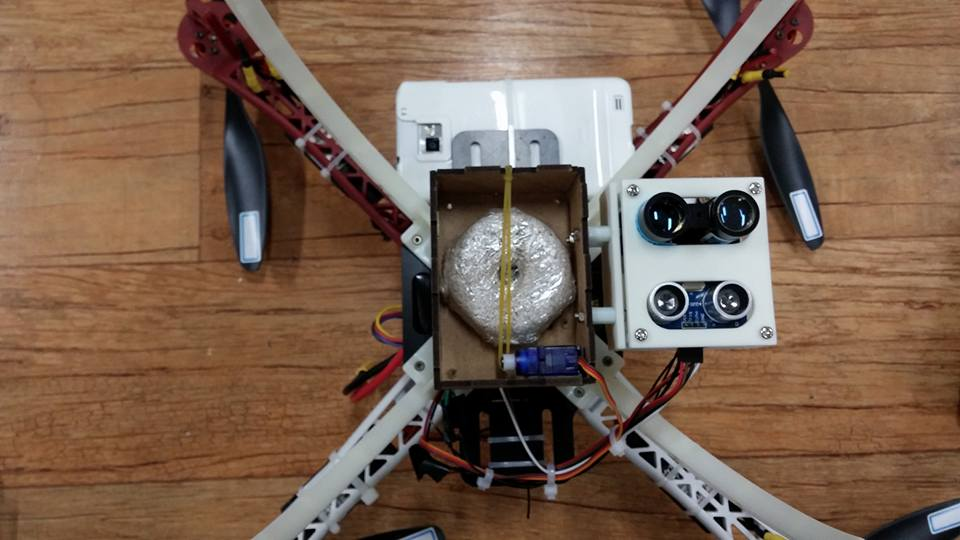
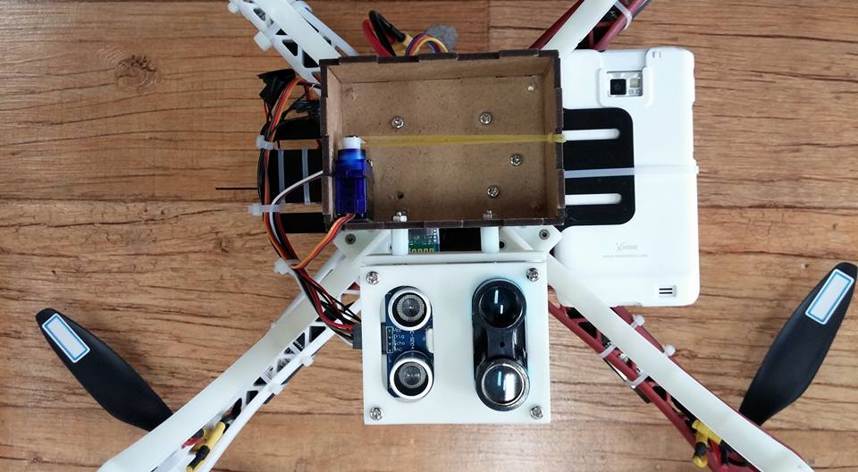
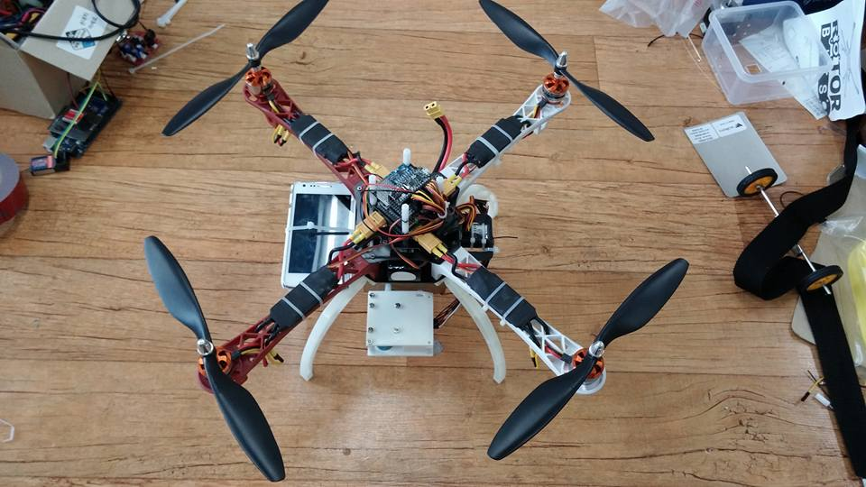
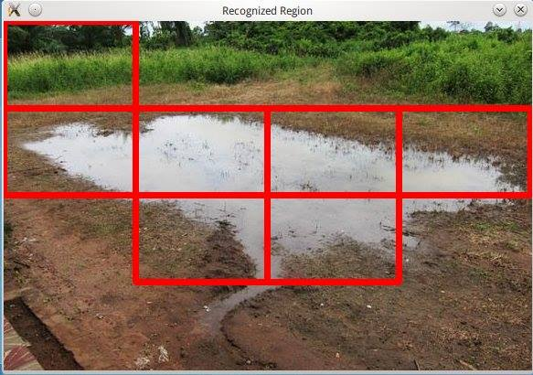
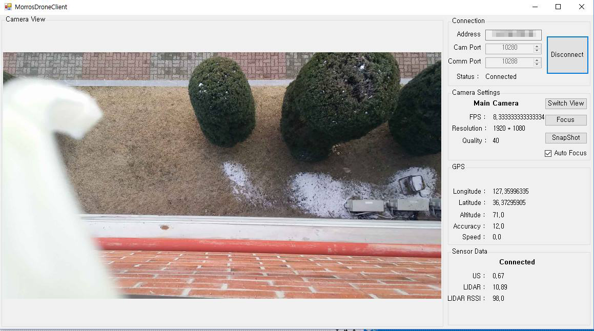

여러 전염병의 원인이 되는 모기를 효과적으로 방제하기 위해 모기가 서식하는 웅덩이를 찾아내고 방제약을 투하하는 드론을 제작하였다. 스마트폰을 사용하여 비행 영상과 위치를 전송하고 레이저와 초음파 센서를 사용해 웅덩이 지형을 인식하며 수송중인 고형 방제약을 투약할 수 있는 구조이다. 기계학습을 이용해 웅덩이를 더 효율적으로 인식할 수 있는 기능 또한 개발 중이다.